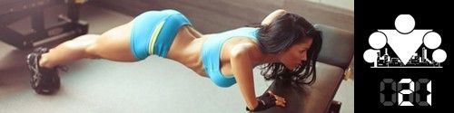

100 Дневный воркаут
<==== Вернуться к оглавлению
День 21. Правило 10 000 часов

!!! ЗАВТРА ДОБАВЛЯЕМ КРУГ !!!
Напоминаю, что последний день тренировочной недели (по умолчанию) вы посвящаете растяжке и круги сегодня НЕ ДЕЛАЕТЕ!!
Бытует мнение, что если вы хотите выработать у себя какую-либо привычку, то нужно повторять её в течение 21 дня, и тогда она закрепится в вашем сознании. Будем считать, что это так, а это значит, что фитнес, тренировки и правильное питание медленно, но уверенно становятся частью вашей повседневной жизни!
Воркаут - это нечто гораздо большее, чем просто тренировки с использованием веса собственного тела на уличных спортивных площадках. Это стиль жизни, и мы хотим познакомить вас с ним по максимуму. Поэтому в последний день тренировочной недели в наших инфо-постах речь будет идти совсем не только о тренировках или питании. Например, сегодня мы поговорим о
правиле 10 000 часов
!
Согласно исследованиям социолога
Андерса Эриксона
, требуется около 10 000 часов практики для того, чтобы достичь уровня мирового класса. И хотя исследования проводились на музыкантах (сначала скрипачах, потом пианистах), но он делает заключение о том, что это правило верно, в принципе, для любой области человеческой деятельности. Музыка (в пример так же приводят легендарных Битлов, интеллектуальные игры (шахматы и Фишер), бизнес (Билл Гейтс). Не важно. 10 000 часов практики и успех практически гарантирован.
Несмотря на то, что само это правило (в особенности жесткую цифру в 10 000 часов) можно поставить под вопрос, но даже простой здравый смысл подтверждает эту идею. Чем больше вы чем-то занимаетесь, (особенно если вы понимаете, чем вы занимаетесь и стараетесь совершенствоваться, а не просто повторяете изо дня в день одно и тоже), тем лучше вы в этом становитесь. И воркаут в этом плане не является исключением.
Требуется определенное количество времени, чтобы научиться с нуля правильно выполнять даже базовые упражнения, такие как отжимания, подтягивания и приседания. Именно поэтому наша программа построена по круговому принципу. Именно поэтому мы фокусируем наши усилия на том, чтобы научиться за 100 дней правильной технике выполнения этих упражнений. Вы должны научиться играть гаммы, перед тем, как начнете играть произведения, ритмы, динамику, интонации и т.д.
Помимо того, что есть определенный барьер в общем количестве, который нужно преодолеть, следует так же помнить и о том, что у нашего организма существуют пороги минимального и максимального числа тренировок в день, ниже которого организм не воспримет информацию как существенную (по аналогии с недостаточной нагрузкой) или выше которого не будет способен воспринимать дальнейшую тренировку по причине усталости и снижения концентрации внимания. Мы строили программу
100-дневного воркаута
с учётом этого принципа, подбирая такую нагрузку, чтобы вы могли заниматься каждый день и при этом не переутомлялись. Кстати, те, кто придерживаются первоначальной схемы 5-10-10-10 к концу программы выполнят порядка 3500 подтягиваний, 7500 приседаний, 6500 отжиманий и 5000 выпадов (это упражнение скоро появится в вашем арсенале)! Этого уже вполне достаточно, чтобы выработать у себя правильную технику, при условии, что вы слушали наши советы и следили за качеством выполнения всех упражнений!
К сожалению, многим хочется всего и сразу, и поэтому они начинают гнаться за элементами или пытаются выучить более сложные варианты упражнений перед тем, как они будут к этому готовы. Не нужно спешить, вы же планируете заниматься этим всю жизнь, так что пара месяцев или даже лет не играют особой роли, если вам действительно нравятся тренировки.
Вполне возможно, что наиболее эффективным вариантом тренировок, с точки зрения наработки техники, были бы абсолютно одинаковые круги на всём протяжении 100 дневного воркаута. Но мы также отлично понимаем, что здесь речь идет не только о физической нагрузке, но и о психологической. И поэтому внесение разнообразий в тренировку оказывает благоприятно воздействие на участников (особенно на тех, кто начинает совсем с нуля). Поэтому, не забывая постоянно повторять о важности правильной техники, время от времени мы будем модифицировать вашу тренировочную программу, делая её более интересной и сложной.
======> День 22. Качество и Регулярность